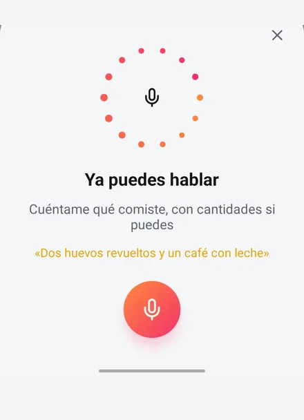
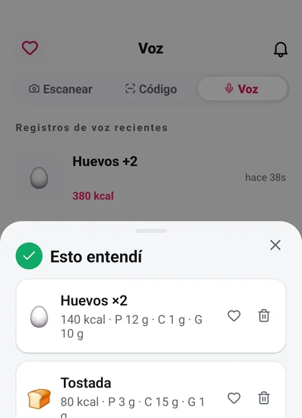

Solo di lo que has comido — en cualquier idioma.
Toca el micrófono y habla con normalidad. Fotocal averigua en qué idioma has hablado, identifica cada alimento y cuánto hay, estima las calorías y los macros y lo guarda en la comida que elijas. Sin escribir, sin buscar, sin recorrer una base de datos.
Cuatro segundos hablando y nada más.
La idea es justo esa: que no tengas que cambiar tu forma de describir la comida. Dílo como se lo dirías a una persona.
-
Toca el micrófono
Está en la pantalla de registro, junto a la foto y el código de barras. Nada que configurar, ninguna palabra de activación, ninguna cuenta aparte que conectar.
-
Habla como hablas
«Dos huevos revueltos, una tostada de centeno y un café con leche.» Sin fórmulas, sin conversiones de unidades, sin elegir de una lista. Las frases normales son el formato de entrada.

-
Detecta el idioma solo
No eliges ninguno antes. Habla hoy en español y mañana en inglés, o cambia a media frase porque un plato solo tiene nombre en uno de los dos: Fotocal reconoce lo que ha oído y responde en ese idioma.
-
Revísalo y mándalo a una comida
Cada alimento que ha encontrado, uno por línea con sus calorías y macros. Quita lo que no sea tuyo, elige Desayuno, Comida, Cena o Snack y guárdalo.

Un registro completo, no una nota rápida.
El registro por voz produce exactamente lo mismo que un escaneo por foto: una comida detallada y con números reales detrás.
-
Una revisión antes de registrar
Nada llega a tu diario hasta que tocas el botón de registrar. Hasta entonces puedes quitar lo que haya entendido mal o guardar un alimento como favorito para la próxima.
-
Cada alimento, por separado
Una línea por alimento en lugar de un bloque. «Ensalada de pollo con aliño» vuelve como pollo, ensalada y aliño, cada uno con sus números.
-
La cantidad que dices
Di «dos huevos» y la entrada dice Huevos ×2: el número que has dicho pasa al alimento y a las calorías que hay detrás.
-
Calorías por alimento y totales
Cada alimento lleva su propia cifra, así que ves qué parte de la comida te ha costado de verdad, no solo el número final.
-
El reparto completo de macros
Proteínas, carbohidratos y grasas del registro, sumados a los anillos del día en cuanto lo guardas.
-
Cualquier comida, a cualquier hora
Desayuno, Comida, Cena o Snack, incluido registrar la cena de anoche con el café de esta mañana.
Con las manos ocupadas y la comida registrada
A mitad de cocinar es justo cuando no puedes escribir. Di lo que ha ido a la sartén y queda registrado: sin lavarte las manos antes y sin coger el móvil dos veces.
Pasa a formar parte del día al instante.
Un registro por voz no es de segunda. En cuanto lo guardas es el mismo objeto que una comida fotografiada, y todo lo que viene después lo trata igual.
- Tus calorías restantes se recalculan al momento, junto con los anillos de proteínas, carbohidratos y grasas.
- Coach Kal lo ve. Pregúntale «¿qué ceno hoy?» y la respuesta tendrá en cuenta lo que acabas de decir que has comido.
- Alimenta la pestaña de Recomendaciones, que propone cambios según dónde se queda corto tu día de verdad, no según una plantilla genérica.
- Cuenta para tu Informe Semanal, así que una semana registrada por voz está tan completa como una registrada con la cámara.
Preguntas sobre el registro por voz
«Dos huevos y tostada con aguacate»
Detecta el idioma automáticamente en vez de pedirte que elijas uno, así que puedes hablar en el idioma en el que el alimento realmente tiene nombre. Importa más de lo que parece: muchos platos no tienen una buena traducción, y describirlos en su idioma da mejor resultado que describirlos en inglés.
¿Tengo que decirlo de alguna forma concreta?
No. Funcionan las frases completas, las frases a medias y las listas. No hace falta decir las unidades, aunque ayuda: «200 gramos de arroz» siempre será mejor que «un poco de arroz».
«Media taza de arroz, pollo a la plancha y un puñado de espinacas»
No se guarda nada hasta que tocas guardar. Hasta entonces puedes eliminar cualquier alimento detectado o marcarlo como favorito; y si lo ha entendido todo mal, cierra la hoja y vuelve a decirlo.
¿Necesita conexión a internet?
Sí. Tanto la transcripción como la estimación nutricional se hacen en nuestro lado, así que el registro por voz necesita conexión.
Sigue leyendo
Lecturas breves y prácticas sobre cómo registrar sin que se convierta en trabajo.
Registra tu próxima comida sin escribir una palabra.
Fotocal es gratis para empezar, con una prueba gratis de 5 días en los planes de pago.
Descárgala gratis En Google Play · Android